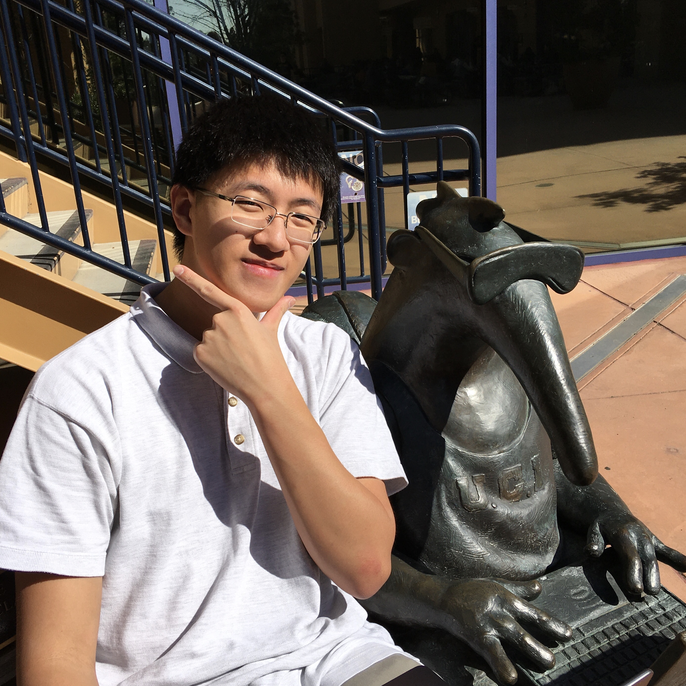

Bryon Tjanaka
 This edition's star of Humans of ICS is Bryon Tjanaka!
We hope you enjoy reading about Bryon and his passion for robotics, his experiences interning at Google twice, and what he has been doing during quarantine!
Year: 3rd Major: Computer Science
Iqra: Today on our segment of Humans of ICS, we are interviewing Bryon. Can you first introduce yourself: your name, your year, and your major?
Bryon: My name is Bryon and I’m a 3rd year senior in the School of ICS. I’m a Computer Science major, specializing in AI.
I: Why did you choose CS as your major?
B: Coming in from high school, I had a lot of experience with robotics and messing around with programming stuff. I did a lot of programming for my robotics team and I took a class in computer science at a summer school program. I found it was interesting and decided that I wanted to pursue it.
I: That’s really cool! What are you passionate about and where did you develop that passion?
B: I’m definitely passionate about robotics and making smart robots. It goes back to when I was really young. When I was 9 or 10 I received my first Robotics kit. It was a Lego Mindstorms Kit for my birthday. I messed around with it and built a robot that went around and shot plastic balls at people. It progressed from there and I started entering robots into science fairs. One time, I built a forklift that went around a model warehouse and moved stuff. It just kept going. In high school, I did this thing called Vex Robotics. That was basically robots that play games against each other; for example, one of them was where you try to shoot balls into a net. Eventually, in my senior year [of high school], I started a team and we won the world championship.
I: Are you part of a robotics team at UCI too?
B: No, I tried to start one but there were a lot of difficulties with logistics, so I focused on other things.
I: What is one piece of advice you would give yourself before coming to UCI?
B: I think the best piece of advice would be to try more things. As an undergraduate and since I'm still pretty young, it's good to go around and explore everything. Definitely have something that is your core and from there, go around and explore new things.
I: Yeah, I completely agree! I feel like in college you have the opportunity to try out everything, so it’s best to dabble around and figure out what you are passionate about to see what you want to do in the future. Alright, where do you see yourself in 5 years?
B: I was recently accepted to a PhD program at USC!
I: Oh, congratulations!
B: Thanks. I'll be studying CS and more specifically, I’ll be joining a lab that is working on robotics. Five years from now, I hope I'll be very close to completing my PhD because typically programs are about 5 to 6 years. Hopefully, I would have it completed by then and hopefully, I would have a job by then, so that I could figure out what I could do after I graduate with a PhD.
I: Now, we are going to move onto more personalized questions, based on what you said in your interest form. I read on the interest form that you have interned at Google! That’s amazing! I’m pretty sure a lot of students want to hear about your experience there and what advice would you give them to get in as well. Can you tell us more about that?
B: Sure, I’ll first start off with what I did at Google. In my first year, I was an Engineering Practicum Intern on Google Assistant. I worked on an internal tool. So, Google Assistant has 3rd party agents that serve as extensions, and for example they would be like when you ask them “What is the weather?” or to play a game. So, when you ask these extensions these questions, they sometimes are not perfect and say “I don’t know” or “Sorry, I couldn’t catch that.” So, I built a tool that will go through each agent and send them all the queries that they are supposed to answer and if it’s saying “I don’t know” to every single one, then it should be marked as bad. So that was an internal tool that they would use for improving the quality of their agents.
I: And what did you do during your second internship?
B: For the second internship, I went back to the same office, but it was a different team. It was Google Ads and in that project, I worked on implementing a clustering algorithm. Some researchers had come up with an algorithm that was designed to do clustering in linear time. They already had a distributed implementation of it, and they wanted me to implement a single machine version. So, I implemented, optimized and then evaluated the algorithm.
I: Oh, wow! Did you intern at the Irvine location or in the Bay Area?
B: It was Mountain View both times.
I: How did you like the atmosphere there? I’m pretty sure you got a lot of good food there!
B: Yeah, it was great and we had a lot of perks! The first time I interned, the building had a slide in it!
I: And what advice would you give to students who want to intern at Google as well?
B: Keep applying, first of all! It's tough because the first time I went in, I didn't have a lot of experience because I was a 1st year and I was applying with basically nothing. So, it’s hard to tell what set me apart. So, I would say talk to people who have interned at Google and try and get their perspective to see what they did. To sum it up, I would say keep applying and talk to a lot of people. That also goes for a lot of things!
I: Definitely, I completely agree! I also saw that you have ranked in many programming competitions. Can you tell us more about what they are and why you decided to compete?
B: I guess I ranked decently. I competed in them because I'm part of this club called ACM@UCI. What we do is train students to code in these things, and we go to competitions ourselves. So, in these competitions, you have like 5 hours or however many hours you have to solve as many from a set of programming problems that you can. The problems are like interview problems, on steroids!
I: That’s awesome that you have the motivation to do tough programming problems on your own time!
B: Yeah, it’s definitely an intellectual exercise.
I: So, you talked about solving Rubik’s cubes as a hobby, so what is your fastest time?
B: My brother is the one who is a Rubik’s cube god, I guess. He can do it in about 15 seconds, but I can only do about 45 seconds at best.
I: That’s still really good, but 15 seconds is crazy!
B: Yeah, shoutout to my brother who taught me everything about it!
I: So, since we are all under quarantine, what have you been doing to pass your time and what will be the first thing that you do once the quarantine is over?
B: I have been working on side projects. First, I have been working on my research projects and I’ve had more time to work on it now. I do research in 2 labs here. For one of them, I’m working with Roy Fox and working on reinforcement learning and robotics. And the other, I’m working with David Mobley and that’s actually in Pharmaceutical Sciences and Chemistry. With him, I’m working on molecule simulations. So, I'm working on both of those projects and I'm also working on stuff for fun, like graphic design and learning a bit of Blender to do some 3D modeling.
I: Wow, that’s really cool! And what will be the first thing that you do once quarantine is over?
B: Oooh, once quarantine is over, I'll probably ride my bike around. I’ve been riding my bike around to go to get food at Brandywine sometimes. Maybe I’ll go on a trip or something.
I: And for the last segment of our interview, we have a rapid fire question segment, so like this or that!
I: So, pineapple on pizza, yay or nay! B: Yes, definitely!
I: Mountains or the beach? B: Probably the beach.
I: Dogs or cats? B: Cats.
I: Netflix or YouTube? B: YouTube.
I: Facebook or Twitter? B: Facebook
I: iOS or Android? B: iOS, I like my privacy!
I: Cake or pie? B: Cake
I: Burger or hotdog? B: Hotdog.
I: Coffee or tea? B: Coffee.
I: Winter or summer? B: I think summer because we have more free time.
I: And that concludes our interview. Thank you, Bryon!
Thanks to Bryon for being a part of Humans of ICS and thank you for reading this edition of Humans of ICS! Follow us on Instagram @icssc.uci! Nominate yourself or your friends for Humans of ICS using the form at https://tinyurl.com/ICSSCxHumansOfICS. See you next time!